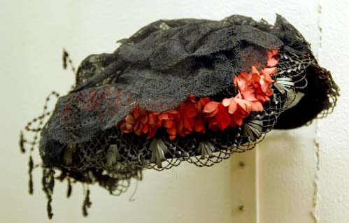
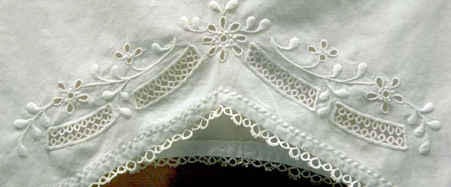
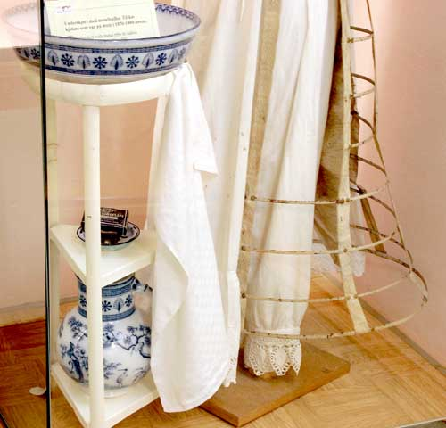
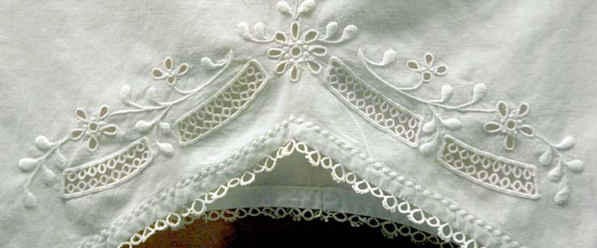
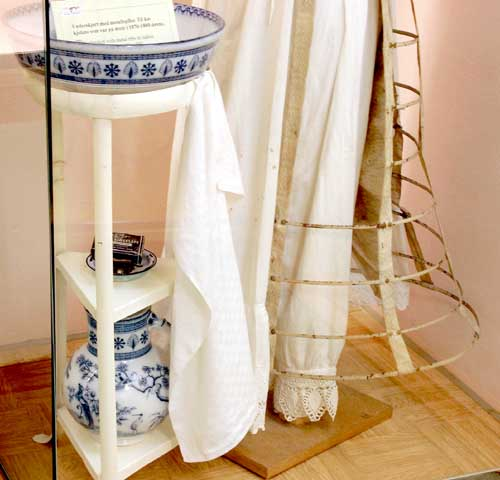

Vest-Agder Fylkesmuseum - Bydrakter
Foto: Torvald Slettebø, Universitetet i Agder, Seniorsenteret
Konsulent: Konservator Kirsten Bertheau Nøklebye
Oversiktsbilde fra Vest-Agder Fylkesmuseums utstilling av bydrakter.
Reisedrakt og knappestøvler fra 1906. Bakerst svart kjole for eldre dame, fra ca 1915.
Barnevognmodell fra omkring 1900. Store hjul var praktisk på ujevn vei og brolegning. Dette var før asfaltens tid.
Detalj av reiseutstyr: Knappestøvler, reisebag i mønstret teksetil, og parasoll.
Til antrekket hørte også en hatt, i tidens hattemote. Blomsterdekoren applikert.
Lorgnett i maskinvevd bånd.
Oversiktsbilde av draktmotene fra 1800-tallet.
Kjole med kø fra 1880-årene
I ledige stunder skulle borgerskapets kvinner sysle med håndarbeid, særlig boderi. Nålepute og hvitsømsbroderi.
Vifte og liten damehatt på 1800-tallet.
Hvite hansker, flosshatt, og snippeske.
Oversiktsbilde av draktmoter fra 1840 til 1800.
Kjolen til høyre i rutet bomullstoff viser empiremoten. Brukt første gang i Farsunds-kvinn i 1826, da hun traff sin tilkommende mann. Nyere mote til venstre: Kjole i rødprikket bomullsbatikk: Livet er nå senket, i en spiss. På 1840-tallet
Fornuftig klokke med kjede av flettet hår har avløst Agnus Dei.
Kvinnene på 1800-tallet skulle ha blek hud, og brukte parasoll mol solen.

Lave kvinnesko fra 1830-1840. Ved siden av en ørehatt, noe yngre. Til høyre en pompadour-veske.
Kjolen til høyre i silke med brosjerte blomstermønstre. Stoff fra ca 1800, men kjolen er omsydd senere i nyere modell. Til venstre: Borgerskapets kvinner hadde gjerne elegante ytterplagg, her cape i vattert silke, pyntet md skinn.
Detalj av silkecapen.
En pompadour-veske i silke med applikasjoner. Tidlig 1800.
Te-sett fra Kina med hankeløse kopper og tekrukke. Tidlig 1700.
Detalj av herrevest, tidlig 1800.
Antrekk for tjenestejente, finere byhusholdning, tidlig 1900.
Pyntehåndkle med engelsk brodering.
Husholdningsutstyr.
 



Bydraktutstillingen ble renovert i 2002. Fagkonsulenter var Kirsten Bertheau Nøklebye og administrasjonsleder Agnete Kjellin på Vest-Agder Fylkesmuseum.